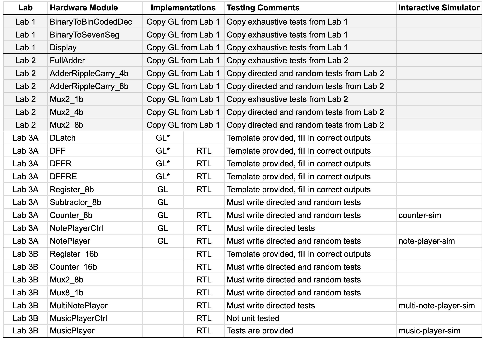
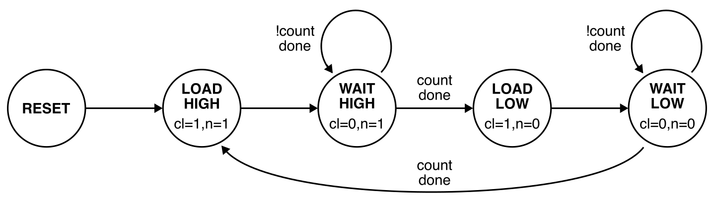
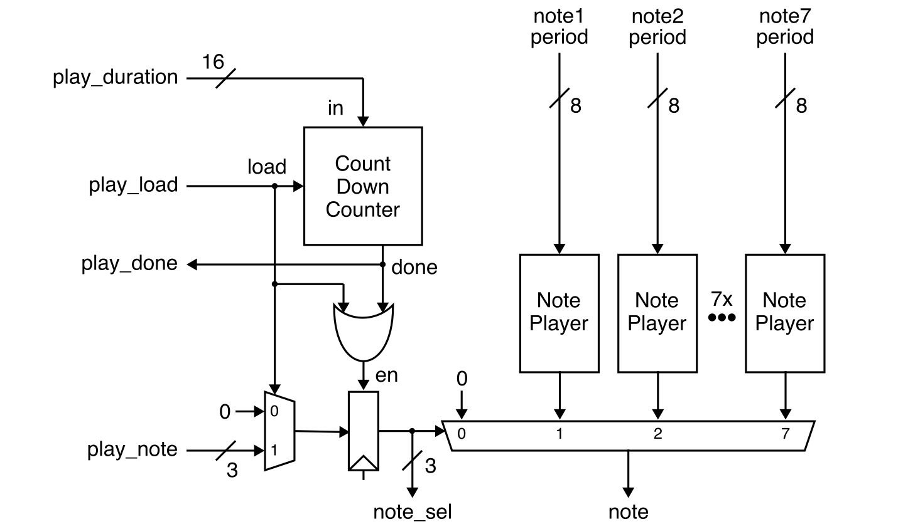
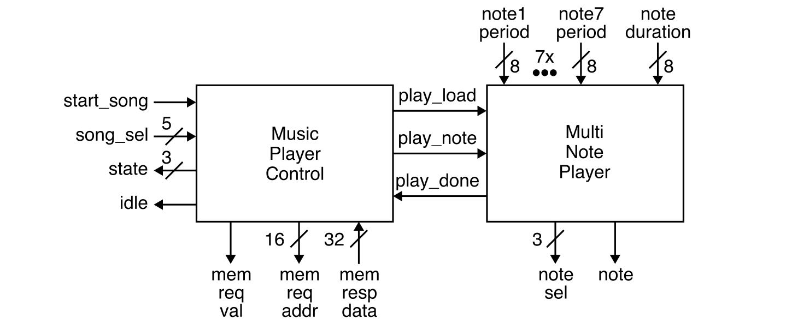
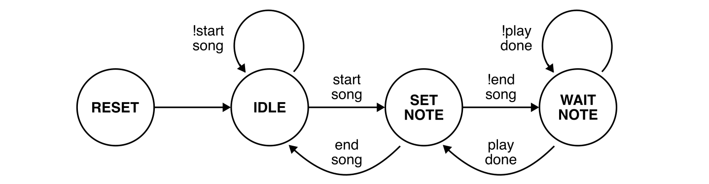
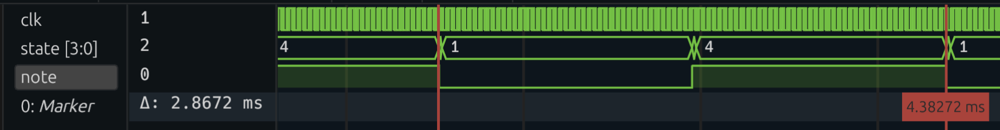
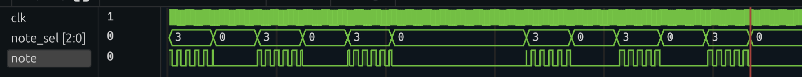

Lab 3 (Parts A & B): Music Player - Implementation and Verification
Lab 3 will give you experience designing, implementing, testing, and prototyping combinational and sequential logic using the Verilog hardware description language. The lab reinforces several lecture topics including sequential logic gates, finite-state machines (FSMs), and sequential building blocks. More specifically, the lab will give students experience with: latches, flip-flops, and registers; Moore and Mealy FSMs; and counters. The lab will continue to provide opportunities to leverage the three key abstraction principles: modularity, hierarchy, and regularity. The lab will also enable students to better understand the connection between simulation and prototyping.
You will be implementing a music player that takes as input a song selection (via the switches) and a start song signal (via a push button). The music player will then play the chosen song by generating a square wave at appropriate note frequencies suitable for use with a piezoelectric buzzer. An idle signal is displayed using an LED so that user knows when the player is ready to play a new song. The music player will make use of the adders and muxes from Lab 2. The song selection and the current note are both displayed using seven-segment displays from Lab 1.
This lab also serves as a transition from lower-level gate-level (GL) modeling to higher-level register-transfer-level (RTL) modeling. Some of parts of your design will use explicit GL modeling or Boolean equations, while other parts of your design will use RTL modeling. Students will have a chance to appreciate how RTL modeling can improve productivity but with less control over the final hardware implementation.
The lab includes four parts:
- Part A: Note Player Implementation and Verification
- Part B: Music Player Implementation and Verification
- Part C: Music Player FPGA Analysis and Prototyping
- Part D: Music Player Report
Parts A and B are submitted by simply pushing the appropriate code to GitHub. Part A is due on Thursday, October 17 at 11:59pm. Part B is due on Thursday, October 24 at 11:59pm. Even though Part B does not need to be submitted on GitHub until Thursday, October 24, students still must have Part B completed before their lab session during the FPGA week in order to complete Part C! Students can use the time after their lab session to continue improving their code and verification quality. Part D is due three days after the student's assigned lab session. All parts must be done with your assigned lab partner. You can confirm your assigned partner on Canvas (Click on People, then Groups, then search for your name to find your lab group).
This handout assumes that you have read and understand the course
tutorials and that you have attended the discussion sections. To get
started, use VS Code to log into an ecelinux server, source the setup
script, and clone your individual remote repository from GitHub:
% source setup-ece2300.sh
% mkdir -p ${HOME}/ece2300
% cd ${HOME}/ece2300
% git clone git@github.com:cornell-ece2300/groupXX
% cd ${HOME}/ece2300/groupXX
% tree
where XX should be replaced with your group number. You can both pull
and push to your remote repository. If you have already cloned your
remote repository, then use git pull to ensure you have any recent
updates before working on your lab assignment.
Go ahead and create a build directory in the lab3-music directory for
this lab, and run configure to generate a Makefile.
Your repo contains the following files which are part of the automated build system:
Makefile.in: Makefile for the build systemconfigure: Configure script for the build systemconfigure.ac: Used to generate the configure scriptscripts: Scripts used by the build system
The following table shows all of the hardware modules you will be working with in Lab 3.

Before starting, you should copy over all of the listed hardware modules and the associated test benches for the seven-segment display from Lab 1 and the eight-bit ripple-carry adder and multiplexors from Lab 2. Make sure all of these hardware modules pass all of your test cases.
Lab 3 requires implementing and verifying 23 hardware modules. While this might seem like a daunting task, many of these hardware modules require less than five lines of Verilog code. For many of the test benches we provide students with a template so they need only enter the expected outputs. Test cases are reused across the GL and RTL versions of the same hardware module. Start from the D latch and systematically work your way down the table. Implement the GL and RTL versions at the same time. Never move on to the next row in the table until you have thoroughly tested the previous row.
Remember that GL implementations must be implemented using either explicit gate-level modeling or Boolean equations. For these designs, students are only allowed to use these Verilog constructs:
wire,assignnot,and,nand,or,nor,xor,xnor~,&,|,^1'b0,1'b1,1'd0,1'd1, and other literals{}(concatenation operator){N{}}(repeat operator)- module instantiation
Hardware modules marked in the table as GL* must only use explicit
gate-level modeling (i.e., you cannot use ~, &, |, ^).
RTL implementations can use all of the GL constructs in addition to the following Verilog constructs.
logic+,->>,<<,>>>==,!=,<,>,<=,>=&&,||,!&,~&,|,~|,^,^~(reduction operators)?:(ternary operator)always_comb,always_ff @(posedge clk)if,else if,endifcase,default,endcase
Note that some hardware modules have more specific restrictions; see the source comments for more details. Using unallowed Verilog constructs will result in significant penalties for code functionality and code quality. If you have any questions on what Verilog constructs can and cannot be used, please ask an instructor. There are no restrictions on Verilog constructs in test benches.
It is critical for students to work together to complete the lab assignment. It is unlikely one student can complete the entire lab on their own. A very productive approach is to have one student work on the design of a few hardware modules while the other student works on the test benches for those same hardware modules. Then work together to test and debug these modules. Then switch roles and move on the next few modules.
1. Interface and Implementation Specification
You will be implementing and composing a variety of combinational and sequential hardware modules including adders, muxes, latches, flip-flops, registers, subtractors, and counters; ultimately you will be composing these hardware modules to implement a music player. This section describe the required interface (i.e., the ports for the module and the module's functional behavior) before describing the required implementation (i.e., what goes inside the module) for each hardware module.
1.1. Latches and Flip-Flops
You will need to implement a GL latch and three GL/RTL flip-flops:
DLatch: D latch (level high, transparent when clock is one)DFF: D flip-flop (positive edge triggered)DFFR: D flip-flop with reset signalDFFRE: D flip-flop with reset and enable signals
You should consult the lecture notes for the GL implementation of these latches and flip-flops. You just need to directly map the implementation from the lecture notes using explicit gate-level modeling. Do not use Boolean equations when implementing these latches and flip-flops!
Recall from the discussion sections that we will need to make use of an
always_ff block for RTL modeling of sequential logic. Here is an
example of how to implement a D flip-flop using an always_ff block:
This always_ff block will execute on the positive edge (posedge) of
the clock signal (clk). We are using a special non-blocking assignment
(<=) which is meant to be used in always_ff blocks. The semantics of
a non-block assignment are: (1) right before the rising edge, the
right-hand side of every non-blocking assignment in the entire design is
evaluated and the result is saved; (2) right after the rising edge, the
saved values are assigned to the signal on the left-hand side. This
enables us to model flip-flops.
Note that this the only form of an always_ff block you are allowed to
use in this course. You are not allowed to use negedge and you are not
allowed to trigger an always_ff with any other signals (e.g., in this
course, you are not allowed to include reset (rst) in the sensitivity
list for an always_ff).
You can use other RTL operations within an always_ff block. For
example, you can use an if/else conditional operation within an
always_ff block to model a D flip-flop with a (synchronous) reset
signal:
Note that in this course we will only allow using an always_ff block in
very specific modules. Namely within the implementation of single-bit
flip-flops (i.e., DFF_RTL, DFFR_RTL, DFFRE_RTL) and within the
implementation of the multi-bit registers (e.g., Register_8b_RTL,
Register_16b_RTL). Students are not allowed to use an always_ff
anywhere else in their hardware designs. If a hardware design needs
sequential logic, then the design should instantiate one of these
single-bit flip-flops or multi-bit registers. This restriction is
critical to enabling new Verilog designers to know exactly what hardware
is being implemented. Arbitrarily using always_ff blocks can quickly
lead to incredibly complicated hardware models with no hope of
understanding what hardware we are actually implementing.
Once you have finished implementing all of the latches and flip-flops, take a minute to appreciate the relationship between the GL and RTL implementations. The RTL implementations are just a different way of modeling the hardware within the GL implementation. The FPGA tools will synthesize the RTL implementation into hardware very similar to what is in the GL implementation.
1.2. Multi-Bit Registers
As discussed in lecture, we can create a GL multi-bit register by simply
instantiating a number of GL flip-flops in parallel. The data input (d)
and data output (q) of each flip-flop should be connected to their
corresponding bit of the register's multi-bit input and output ports. The
clock, reset, and enable signals should be connected to each flip-flop.
We need an GL eight-bit register for use in the GL count-down counter.
For RTL multi-bit registers there is no need to instantiate a number of
RTL flip-flops. We can instead model a multi-bit register using a single
always_ff block. A single non-blocking assignment can be used to assign
the multi-bit input to the multi-bit output on the rising edge of the
clock. We need RTL eight-bit and 16-bit registers for use in various more
complex RTL hardware modules.
1.3. Eight-Bit Subtractor
We need a GL eight-bit subtractor to implement the count-down counter. Our subtractor will represent negative numbers using the two's complement number system, which means we can efficiently implement a two's complement subtractor using the same eight-bit ripple-carry adder you developed in Lab 2. Our subtractor does not need a carry input nor a carry output.
1.4. Count-Down Counters
The count-down counter has the following interface:
The reset input (rst) should reset the internal counter to zero. When
the load input (load) is high, then the counter should load the value
on the input (in) into the internal counter.
When load is not high (no new value is being loaded), the counter
should decrement by one every cycle until it reaches zero, at which point
the done output (done) should be set to one. Once the counter is done,
it should no longer decrement until a new value is loaded.
The input (in) must be positive. Since we are using a two's complement
number representation, the maximum allowed value for the input is 127.
Here is a trace of the expected output when counting down from three.
cyc rst load in in count count done
0: 0 0 00000000 ( 0) > 00000000 ( 0) 1
1: 0 1 00000011 ( 3) > 00000000 ( 0) 1
2: 0 0 00000000 ( 0) > 00000011 ( 3) 0
3: 0 0 00000000 ( 0) > 00000010 ( 2) 0
4: 0 0 00000000 ( 0) > 00000001 ( 1) 0
5: 0 0 00000000 ( 0) > 00000000 ( 0) 1
Pay careful attention to the exact cycle the output count is set to three and the exact cycle the done signal is set to one. Your counter must produce the exact same cycle-level behavior.
You are responsible for designing your own GL eight-bit counter that meets this specification. Your GL implementation must make use of the GL muxes, GL registers, and GL subtractor. Do not put any logic on the reset signal. The reset signal should be directly attached to the reset input port of the register without any logic. Do not put any logic on the clock. The clock signal should be directly attached to the clock input port of the register without any logic. Start by drawing a block-level diagram. You will need to show this diagram in lab for Part C and include this diagram in the report for Part D.
You are also responsible for designing your own RTL eight-bit and 16-bit
counters that meet this specification. Your RTL counters must
explicitly instantiate an RTL register for the sequential logic, and then
use a single always_comb block for your combinational logic. You cannot
directly use an always_ff block in your RTL counter. You must
explicitly instantiate an RTL register. Do not put any logic on the
reset signal. The reset signal should be directly attached to the reset
input port of the register without any logic. Do not put any logic on
the clock. The counters are examples of flat RTL modules, since they do
not instantiate any hardware modules other than the a register.
1.5. Note Player
The note player generates a square wave at a given frequency forever. It includes a control unit and a count-down counter.
The clock and reset signals are not shown in the above block diagram. The period is provided as an input port and is assumed to never change after reset. The control unit should be implemented using the following five-state Moore FSM.

The outputs are specified in each state: cl stands for count_load and n
stands for note. The FSM must use the following state encoding:
State Encoding
---------------------
RESET 4'b0000
LOAD_HIGH 4'b1000
WAIT_HIGH 4'b0100
LOAD_LOW 4'b0010
WAIT_LOW 4'b0001
In the LOAD_HIGH state, the FSM should load the period into the count-down counter, set the note output to be high, and move into the WAIT_HIGH. In the WAIT_HIGH state, the FSM should continue to set the note output to be high. Once the counter is done, the FSM should move into the LOAD_LOW state. In the LOAD_LOW state, the FSM should load the period into the count-down counter, set the note output to be low, and move into the WAIT_LOW. In the WAIT_LOW state, the FSM should continue to set the note output to be low. Once the counter is again done, the FSM should move back to the LOAD_HIGH state to repeat the sequence.
Here is a trace of the expected output when the period is five.
cyc rst period state state note
------------------------------------------
0: 0 00000101 > 0000 (RESET ) 0
1: 0 00000101 > 1000 (LOAD_HIGH) 1
2: 0 00000101 > 0100 (WAIT_HIGH) 1
3: 0 00000101 > 0100 (WAIT_HIGH) 1
4: 0 00000101 > 0100 (WAIT_HIGH) 1
5: 0 00000101 > 0100 (WAIT_HIGH) 1
6: 0 00000101 > 0100 (WAIT_HIGH) 1
7: 0 00000101 > 0100 (WAIT_HIGH) 1
8: 0 00000101 > 0010 (LOAD_LOW ) 0
9: 0 00000101 > 0001 (WAIT_LOW ) 0
10: 0 00000101 > 0001 (WAIT_LOW ) 0
11: 0 00000101 > 0001 (WAIT_LOW ) 0
12: 0 00000101 > 0001 (WAIT_LOW ) 0
13: 0 00000101 > 0001 (WAIT_LOW ) 0
14: 0 00000101 > 0001 (WAIT_LOW ) 0
15: 0 00000101 > 1000 (LOAD_HIGH) 1
Pay careful attention to the exact cycle of each state transition and the exact cycles the note is high and low. When you load the count-down counter with the value five it will be zero on the sixth cycle. Your note player must produce the exact same cycle-level behavior.
The GL version of the note player control unit should instantiate
four DFFRE_GL modules to store the four-bit FSM state. The next state
combinational logic and output combinational logic should be implemented
using Boolean equations. The GL version of the note player just composes
the GL note player control unit with the GL count-down counter.
The RTL version of the note player control unit should instantiate four
DFFRE_RTL modules to store the four-bit FSM state. The next state
combinational logic should be implemented using a single, dedicated
always_comb block. The output combinational logic should be implemented
using a separate always_comb block. The control unit is an example of a
flat RTL module, since it does not instantiate any hardware modules
other than the flip-flops. The RTL version of the note player just
composes the RTL note player control unit with the RTL count-down
counter.
1.6. Multi-Note Player
The multi-note player can produce one of seven notes or a rest for a specified duration by composing a counter, mux, register, and seven note players.

The clock and reset signals are not shown in the above block diagram. The
periods are provided as an input ports and are assumed to never change
after reset. We will only be implementing an RTL version of the
multi-note player, and so we will use the RTL version of each of these
hardware modules. This is an example of structural RTL, since it does
not directly include any always_comb blocks and instead just
instantiates other RTL modules.
To play a note using the multi-note player, the play_note input is set
to the desired note (i.e., which of the seven note period inputs to use),
the play_duration input is set to the desired duration, and the
play_load input is set high for one cycle. The desired note is produced
on the note output and when the duration is done the play_done output
is set high. The note_sel output is provided for debugging.
Note that when the note select (note_sel) is zero, then the multi-note
player should produce a rest (i.e., the note should stay low). You will
need to implement a RTL eight-bit 2-to-1 multiplexor and a RTL one-bit
8-to-1 multiplexor. Once these are implemented and tested you can compose
them with your RTL eight-bit count-down counter and your RTL note
players.
1.7. Music Player
The music player plays a song stored in memory. It includes a control unit and a multi-note player.

The clock and reset signals are not shown in the above block diagram. The periods are provided as an input ports and are assumed to never change after reset. We will only be implementing an RTL version of the music player. The music player control unit will include a Mealy FSM which should be implemented using flat RTL.
Songs are stored in memory as a sequence of notes. The memory is arranged
as 64K 4-byte words. The memory interface has a memory request valid
port (memreq_val) and a memory address port (memreq_addr). The memory
address is a byte address. To read a value from memory, we need to set
the memory address to the desired byte address and set the memory request
valid signal high. The data will be returned combinationally (i.e., on
that same cycle) on the memresp_data port.
Our music payer can play songs with up to seven notes and a rest. Each note is stored in one 4-byte word using the following encoding:
NOTE Encoding
------------------------
REST 32'h00000000
NOTE_G 32'h00000001
NOTE_A 32'h00000002
NOTE_B 32'h00000003
NOTE_C 32'h00000004
NOTE_D 32'h00000005
NOTE_E 32'h00000006
NOTE_F 32'h00000007
SONG_END 32'hffffffff
Each song can have a maximum of 128 notes. The value 32'hFFFF_FFFF
(i.e., all ones) is used to indicate the end of a song. The music player
can play up to 32 songs; so the music player will only use \(32 \text{
songs} \cdot \frac{128 \text{ notes}}{\text{song}} \cdot
\frac{4B}{\text{note}} = 16KB\) of storage. The song memory map (i.e.,
how the songs are arranged in memory) looks like this:
address song note
-------------------
0x0000 0 0 start of song 0
0x0004 0 1
0x0008 0 2
...
0x01fc 0 127
0x0200 1 0 start of song 1
0x0204 1 1
0x0204 1 1
...
0x03fc 1 127
0x0400 2 0 start of song 2
...
The control unit will need its own memory address counter to keep track
of the memory address of the note we are currently playing. This counter
is initialized using the song select input (song_sel). From the above
memory map, we can see that the starting memory address for a song is
just:
The counter will then need to increment this memory by four (because we are using memory byte addresses and each note is four bytes) so the music player can read the next note. This counter should be implemented by instantiating a register and then using flat combinational logic within the music player. You cannot use your previously developed counter since you need to increment by four each time.
The control unit should be implemented using the following four-state Mealy FSM.

The FSM must use the following state encoding:
In the IDLE state, the music player should initialize the memory address
counter to the desired song using the song select input (song_sel),
wait until start song is high, and then move into the SET_NOTE state. In
the SET_NOTE state, the FSM should read the next note from memory by
using the address from the memory address counter and setting the memory
request valid signal high. Since the memory is combinational, the
SET_NOTE state should also handle the memory response. If the note read
from memory is SONG_END, then the FSM should return to the IDLE state.
Otherwise, the FSM should set the control signals for the multi-note
player appropriately, increment the memory address counter, and move into
the WAIT_NOTE state. In the WAIT_NOTE state, the FSM should wait until
the multi-note player is done before moving back into the SET_NOTE state
to read the next note from memory.
We recommend taking an incremental approach as opposed to just implementing the entire FSM and counter at once. Start by implementing just implementing the FSM without support for playing more than one note nor support for playing more than one song. Have your FSM go from RESET, to IDLE, to SET_NOTE, to WAIT_NOTE and just stay in WAIT_NOTE forever. Get this working and look at the trace and waveforms to confirm that your FSM is moving through the states correctly and setting the control signals for the multi-note player correctly. Then incrementally add support for moving from WAIT_NOTE back to SET_NOTE but without a counter. This should just play the same note over and over. Once this is working, incrementally add support for the counter. Once this is working, incrementally add support for moving from SET_NOTE back to IDLE and being able to play more than one song.
2. Testing Strategy
You are responsible for developing an effective testing strategy to ensure all implementations are correct. Writing tests is one of the most important and challenging aspects of designing hardware. Hardware engineers often spend far more time implementing tests than they do implementing the actual hardware design.
2.1. Basic Testing
We will be using the same lightweight testing framework from the previous
labs. For each hardware module, we provide a test bench for you to use
along with one basic test case. We will be using the same automated build
system from Lab 2 to simplify linting, compiling, and running tests. You
can run the basic tests for all hardware modules using the generated
Makefile.
You can also build and run a single test simulator.
You can specify which specific test case to run on the command line and also dump waveforms that can be viewed using Surfer.
% cd ${HOME}/ece2300/groupXX/lab3-music/build
% make DLatch_GL-test
% ./DLatch_GL-test +test-case=1
% ./DLatch_GL-test +test-case=1 +dump-vcd=waves.vcd
2.2. Exhaustive Testing
The following test benches are for hardware modules with a limited number of inputs, and thus you can (and should) use exhaustive testing:
DLatch_GL-test.vDFF_GL-test.v,DFF_RTL-test.v
We provide test case templates for these test benches so all you need to
do is fill in the expected output. You do not need to add any more test
cases. Notice that DFF_GL and DFF_RTL have the exact same interface
and thus will use the exact same test cases. We have refactored the test
cases for these hardware modules into DFF-test-cases.v and then
included these test cases in DFF_GL-test.v and DFF_RTL-test.v. This
way we only need to write the test cases once.
2.3. Directed Testing
The remaining hardware modules all have many more inputs and thus would required hundreds or even thousands of checks to implement exhaustive testing. So for the remaining hardware modules you can use directed testing to check for specific corner cases.
We provide test case templates for the following test benches so all you need to do is fill in the expected output. You do not need to add any more test cases.
DFFR_GL-test.v,DFFR_RTL-test.vDFFRE_GL-test.v,DFFRE_RTL-test.vRegister_8b_GL-test.v,Register_8b_RTL-test.vRegister_16b_RTL-test.v
For some of these these we have again refactored the test cases for these
hardware modules into a separate -test-cases.v file. You must write
your own directed test cases for the following test benches:
Subtractor_8b_GL-test.vCounter_8b_GL-test.v,Counter_8b_RTL-test.v,Counter_16b_RTL-test.vMux2_8b_RTL-test.v,Mux8_1b_RTL-test.vNotePlayerCtrl_GL-test.v,NotePlayerCtrl_RTL-test.vNotePlayer_GL-test.v,NotePlayer_RTL_RTL-test.vMultiNotePlayer_RTL-test.v
You do not need to unit test MusicPlayerCtrl_RTL and we provide you
tests for MusicPlayer_RTL.
Remember, each directed test case should focus on testing a very specific
kind of functionality and they should contain 2-10 checks. Be sure to add
your tests cases to the list in the initial block and to check the
output of the test simulator to confirm that your directed test cases are
running and testing what you expect them to. Consider purposefully
inserting a bug in your designs to see if your directed test cases will
catch the bug.
2.4. Random Testing
Directed testing is useful for testing the known unknowns, but what about the unknown unknowns? How should we test for corner cases we have not even thought of yet? Random testing can help increase our testing coverage and increase our confident that our hardware design is functionally correct. You should implement one random test case for each of the following hardware modules:
Subtractor_8b_GL-test.vCounter_8b_GL-test.v,Counter_8b_RTL-test.v,Counter_16b_RTL-test.vMux2_8b_RTL-test.v,Mux8_1b_RTL-test.vNotePlayer_GL-test.v,NotePlayer_RTL_RTL-test.v
Random test cases should include a for loop. Each iteration should: (1)
generate random input values; (2) use Verilog test code to
programmatically determine the correct output values; and (3) use the
check task to ensure the design-under-test produces the correct outputs
give the corresponding random inputs.
2.3. Simulator
We have provided you four simulator which will emulate the FPGA prototype you will be demoing in Part C of the lab. After finishing implementing and thoroughly testing your RTL counter, you can build and run the simulator for the counter like this:
The switches are connected to the counter input. The counter simulator will display the input and the output of the count-down counter by showing what the six seven segment displays would look like on the FPGA prototype. You can press enter to emulate the clock toggling.
After finishing implementing and thoroughly testing your RTL note player, you can build and run the simulator for the note player like this:
The switches will set the period of the note player. Here is a table showing the mapping from inputs to notes.
period period freq
switches hex dec (cycs) (ms) (Hz) note
0111_1011 0x7b 123 250 5.12 195.31 G3
0110_1101 0x6d 109 222 4.55 219.95 A3
0110_0001 0x61 97 198 4.06 246.61 B3
0101_1011 0x5b 91 186 3.81 262.52 C4
0101_0001 0x51 81 166 3.40 294.15 D4
0100_1000 0x48 72 148 3.03 329.92 E4
0100_0100 0x44 68 140 2.87 348.77 F4
The simulator will generate a VCD file that you can then open using Surfer to look at the note output waveform. You can measure period between rising edges of the note output to verify that the note player is indeed generating the note at the proper frequency. For example, this is what the output looks like when setting the switches to 0100_0100. The period is 2.86ms which is 348Hz or the note F4. Try other notes!

After finishing implementing and thoroughly testing your RTL multi-note player, you can build and run the simulator for the multi-note player like this:
The switches now select which note to play according to the following table.
period period freq
sw hex dec (cycs) (ms) (Hz) note
000 rest
001 0x7b 123 250 5.12 195.31 G3
010 0x6d 109 222 4.55 219.95 A3
011 0x61 97 198 4.06 246.61 B3
100 0x5b 91 186 3.81 262.52 C4
101 0x51 81 166 3.40 294.15 D4
110 0x48 72 148 3.03 329.92 E4
111 0x44 68 140 2.87 348.77 F4
This simulator will also generate a VCD file that you can then open using Surfer to look at the note output waveform. Try selecting different notes and verifying that the period is as expected.
After finishing implementing and thoroughly testing your RTL music player, you can build and run the simulator for the music player like this:
The switches now select which song to play. Here is what the output looks like for song 1. You will figure out which song this is in Part C of the lab.

3. Lab Code Submission
Your code quality score will be based on the way you format the text in your source files, proper use of comments, deletion of instructor comments, and uploading the correct files to GitHub (only source files should be uploaded, no generated build files). Note that students must remove unnecessary comments that are provided by instructors in the code distributed to students. Students must not commit executable binaries or any other unnecessary files.
To submit your code you simply upload it to GitHub. Your design code will be assessed both in terms of functionality and code quality. Your functionality score will be determined by running your code against a series of tests developed by the instructors to test its correctness. Your test bench code will also be assessed both in terms of verification quality and code quality. Here is how we will be testing your code submission for Lab 3 (Part A):
% mkdir -p ${HOME}/ece2300/submissions
% cd ${HOME}/ece2300/submissions
% git clone git@github.com:cornell-ece2300/groupXX
% cd ${HOME}/ece2300/submissions/groupXX/lab3-music
% mkdir -p build
% cd build
% ../configure
% make check-partA
Here is how we will be testing your code submission for Lab 3 (Part B):